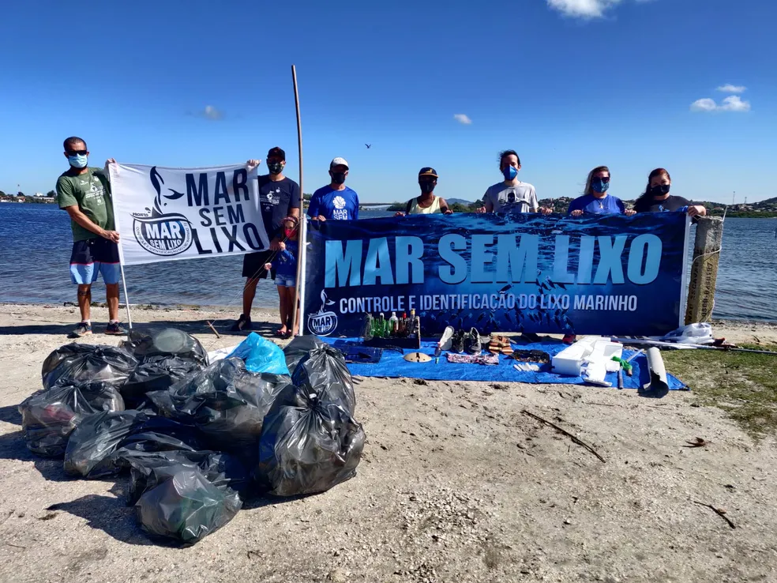
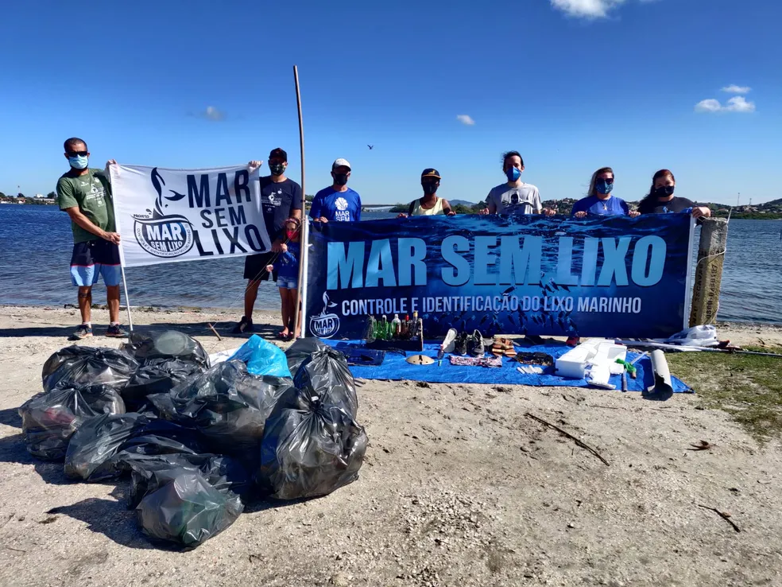
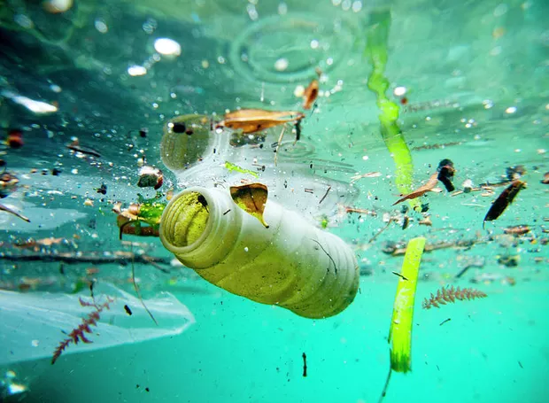
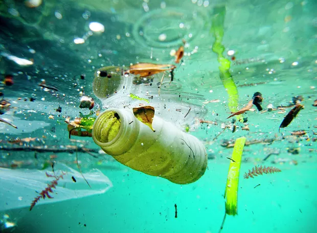
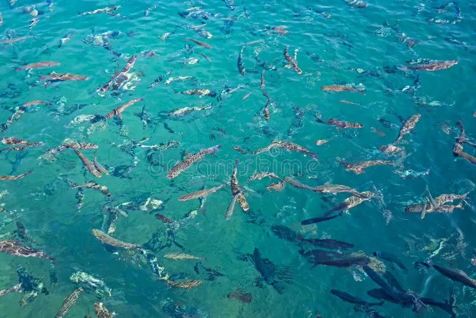
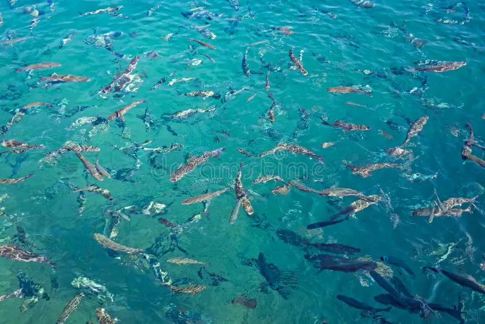
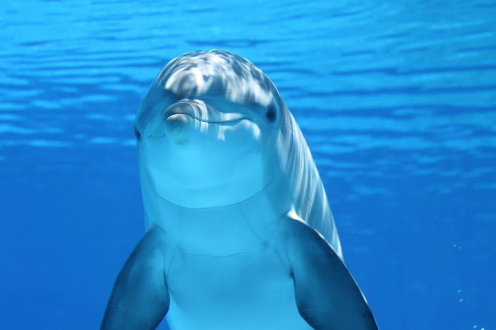
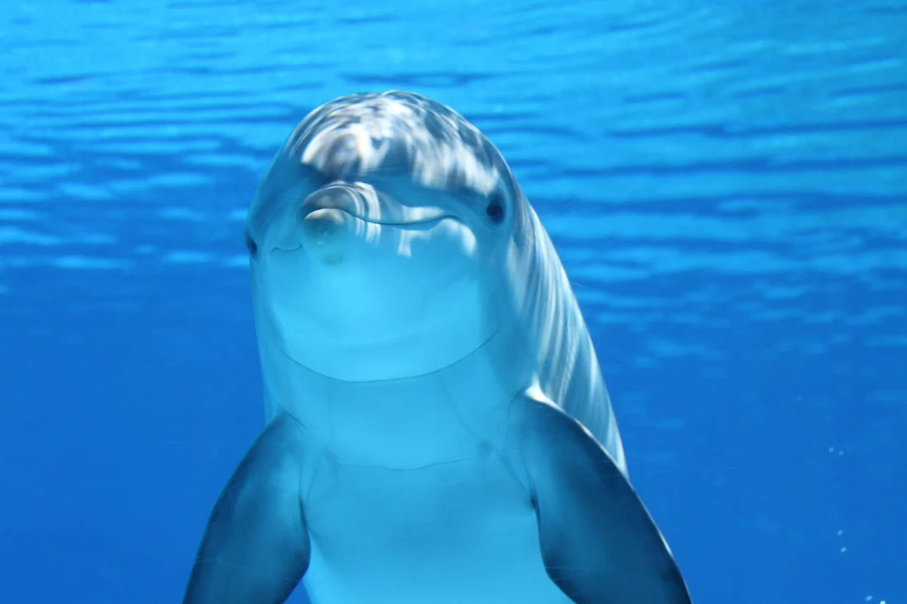

Quem Somos
Fundada em 2005 por um grupo de apaixonados pelo mar, a ONG Planeta Azul nasceu após uma expedição voluntária de limpeza em praias do litoral paulista. O choque com a quantidade de lixo e o impacto na vida marinha motivou a criação de uma entidade dedicada à preservação dos oceanos e à educação ambiental.
Desde então, a ONG atua em projetos de despoluição, monitoramento de fauna e flora, campanhas educativas e mobilização comunitária. Nossa missão é transformar a relação das pessoas com o meio ambiente, promovendo ações concretas para reduzir a poluição dos mares e proteger habitats naturais.
- Missão: Proteger mares e habitats naturais, promovendo educação ambiental, pesquisa, despoluição e ações de conservação.
- Visão: Ser referência nacional em projetos de despoluição marinha e educação ecológica, inspirando comunidades a cuidar do planeta.
- Valores: Respeito à natureza, transparência, inovação, trabalho em equipe e compromisso com a sustentabilidade.
História: Nossa primeira grande ação foi a remoção de mais de 2 toneladas de resíduos plásticos em praias de Santos, envolvendo mais de 100 voluntários. Desde então, expandimos para projetos de reciclagem, educação em escolas, monitoramento de tartarugas e campanhas de conscientização em redes sociais. Cada conquista reforça nosso compromisso com um planeta mais azul e saudável para todos.
 

Projetos Ambientais
Conservação Marinha
Nossos projetos promovem a proteção dos mares, oceanos e áreas costeiras, realizando ações de limpeza, monitoramento da fauna e flora marinha, e campanhas de conscientização sobre a importância dos ecossistemas aquáticos.
Por meio da educação ambiental, engajamos comunidades, escolas e voluntários para preservar habitats naturais, combater a poluição e incentivar práticas sustentáveis. Acreditamos que cada pessoa pode ser agente de transformação na defesa do planeta.
Educação Ecológica
Oferecemos oficinas, palestras e atividades educativas sobre biodiversidade, reciclagem, uso consciente dos recursos naturais e preservação dos oceanos. Nossas ações buscam despertar o respeito à natureza e formar cidadãos comprometidos com a sustentabilidade.
Os projetos de cidadania ambiental incentivam o protagonismo comunitário, o respeito ao meio ambiente e a participação ativa na conservação dos recursos naturais. Investir em educação ecológica é preparar novas gerações para cuidar do planeta.
Impacto ambiental: Com nossos projetos, promovemos a recuperação de áreas degradadas, a proteção de espécies ameaçadas e o engajamento social em prol de um futuro mais sustentável para todos.
 

Ajude a Preservar os Mares!
Com sua doação, podemos ampliar nossos projetos de conservação marinha e educação ambiental, tornando nosso planeta mais azul. Clique no botão abaixo para apoiar a preservação dos oceanos!
- Doação única ou recorrente
- Parcerias para conservação ambiental
- Campanhas de limpeza de praias
- Voluntariado ecológico
 

Galeria de Fotos
 

Transparência e Resultados
Nosso compromisso é com a transparência. Todos os resultados e investimentos estão disponíveis para consulta.